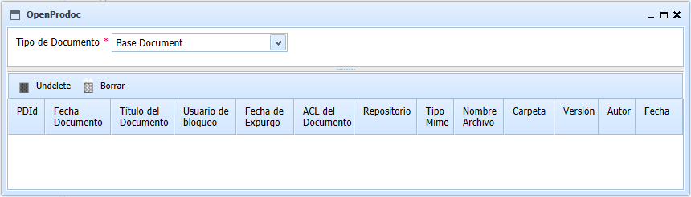

Al seleccionar la opción de menú Otras Tareas - Papelera, aparecerá un formulario que permite filtrar por el tipo de documento que se desea recuperar. Eligiendo el tipo de documento aparecerá la lista de todos los documentos del tipo elegido que están aún en la papelera. Para los documentos borrados aplican los mismos criterios de seguridad que para los vigentes. Si no se disponía de permisos para ver un documento, no será posible verlo o localizarlo tampoco en la papelera.

La tabla de resultados muestra tods ls metadatos de ese tipo documental. Pulsando sobre el título, puede verse el archivo asociado a ese documento.
Se dispone de dos botones, una que permite sacar el documento de la papelera, recuperando ese documento y otra que permite eliminarlo definitivamente del sistema. Los documento se recuperan en la carpeta donde estaban en el momento de borrarse. Si esa carpeta no existiera, se recuperan en la carpeta del usuario actual.
La tabla de resultados puede ordenarse seleccionando la cabecera de cada columna. Puede también cambiarse el tamaño de cada columna arrastrando la línea separadora de las cabeceras
Ver: Borrado Documentos